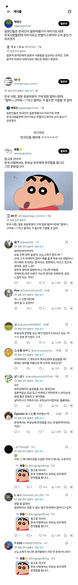

한국의 존댓말을 이해 못하던 일본인들.jpg
댓글
존댓말은 몇살때쯤 배우지?
모르겠네
사이타마의 그 개자식이 뉴구임?
문맥파악력 좆되네 라고 생각했다가
닉보고 끄덕
아.. 닉 이제 봤다 하하하
좆구
비영신 분탕종자새끼
그럼 아리가또 해도 되눈거야?
데빌구에 대한 일관된 진술ㅋㅋㅋㅋ
작중에서도 엄마보고 미사에(봉미선) 이지랄하는데ㅋㅋㅋㅋ
야, 봉미선
만화책 보면 미사에 노돈 이라고 놀림 ㅋㅋㅋ 미친놈
"아니 그 악마새끼가 존댓말을?"
데빌구= 사이타마의 개자식 ㅋㅋㅋㅋㅋㅋㅋㅋㅋㅋㅋㅋㅋㅋㅋ
더빙하면 반말도 존댓말이되는경우가 왕왕있음
저거하나로 확실하게 이해해버리는게 웃기네 ㅋㅋㅋㅋㅋ
일본 존댓말은 한국이랑 뉘앙스나 쓰임새가 꽤 많이 다르긴 함
부모님한테 반말하는 사람들 믾은뎅.
특히 5살은 대부분 반말이지 ㅋㅋ